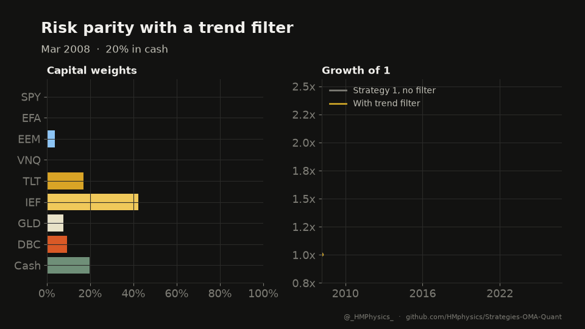
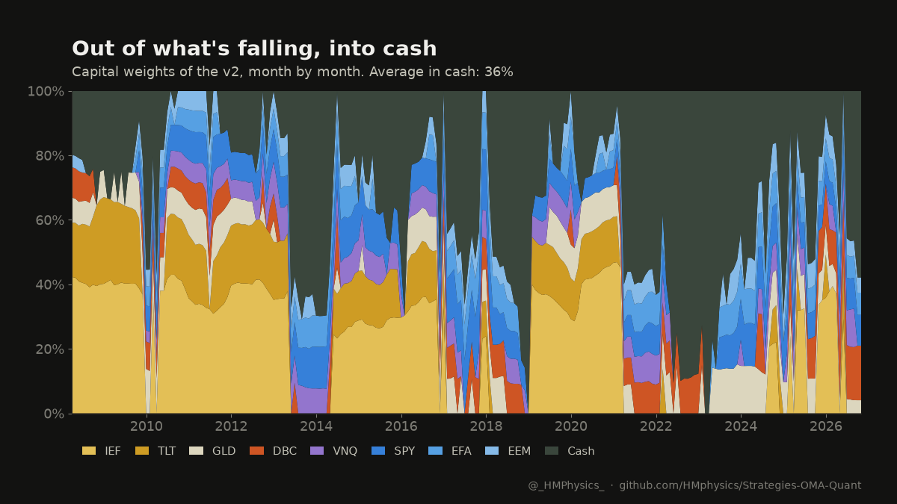
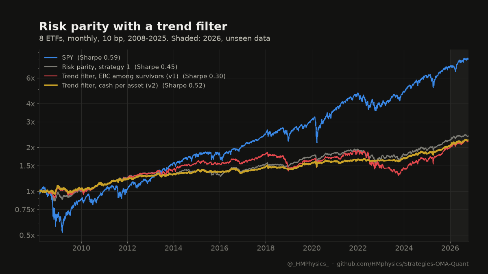
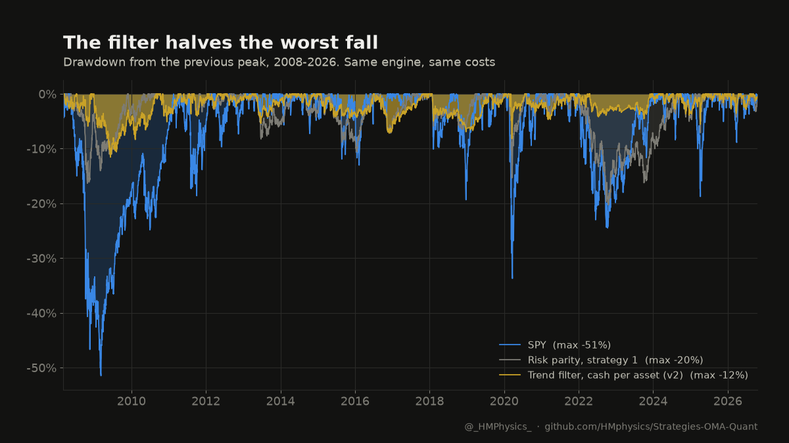
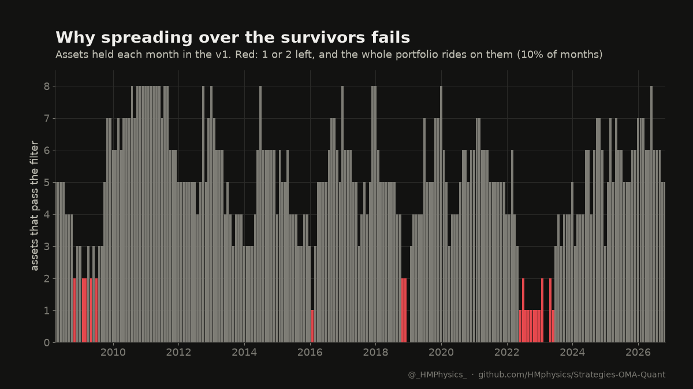
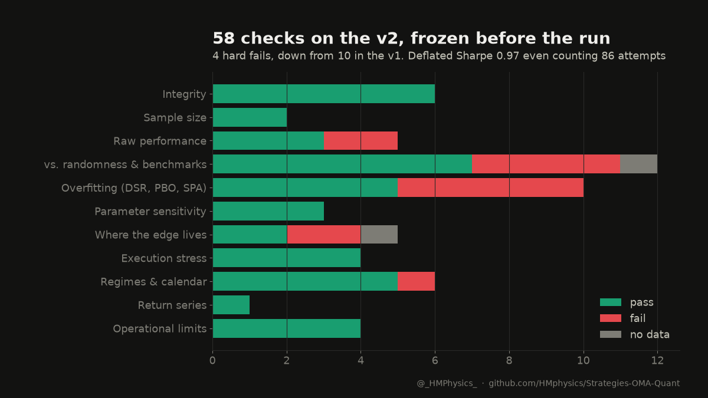

216 Quant Books · Episode 4 · Book 1 · Strategy 4 · variants of strategy 1
Strategy 1 split the risk evenly across eight asset classes. Here every asset also has to be in an uptrend to stay in the portfolio, and what isn't goes to cash.
Sample 3 March 2008 to 31 December 2025, same eight ETFs as strategy 1, monthly, long only, no leverage, 10 bp per side. Same engine and costs for every line.
How it plays
Every month each ETF has to beat the T-bill over the last twelve months. That's absolute momentum, the oldest rule in tactical allocation. We tested two ways of using it:
v1, spread over the survivors: risk parity only among the assets that pass; if none pass, all cash. v2, cash per asset: risk parity across all eight as before, and each asset that fails hands its slice to cash.


The record

| Version | Sharpe | CAGR | Vol | Max DD | Calmar | 2026 Sharpe |
|---|---|---|---|---|---|---|
| v2: cash per asset | 0.52 | 4.1% | 5.6% | −11.6% | 0.35 | 1.23 |
| v1: spread over survivors | 0.30 | 3.9% | 10.2% | −32.8% | 0.12 | 1.12 |
| Strategy 1, no filter | 0.46 | 4.6% | 7.8% | −20.3% | 0.23 | 0.77 |
| SPY, buy and hold | 0.59 | 11.7% | 19.9% | −51.5% | 0.23 | 0.98 |
2008–2025 sample unless marked. Calmar = CAGR / |max drawdown|. 2026 runs from January to October.

The v1 is the warning. When only one or two assets pass, "risk parity among the survivors" puts the whole portfolio on them. In 2022, with bonds falling too, that made it worse than having no filter at all.

What the engine checked
This idea came after seeing strategy 1, and the v2 after seeing the v1. YGGDRASIL counts all of it: the deflated Sharpe is computed against 86 attempts, so the bar is higher than for any strategy so far.

The verdict
The trend filter, done the right way, does exactly what you'd want from it: it cuts the worst fall nearly in half, earns more per point of drawdown than the S&P 500, and survives costs and delays. It's the best version of risk parity in the series so far.
It doesn't clear YGGDRASIL's bar, and it can't turn a calm 4%-a-year portfolio into a high-Sharpe strategy. Worth knowing and worth studying, not quite worth our capital.